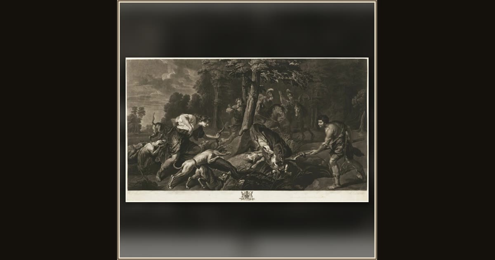

The Calydonian Boar Hunt, from the Houghton Gallery
Richard Earlom (British, 1743-1822), after Peter Paul Rubens (Flemish, 1577-1640) · 1781 · The Art Institute of Chicago · Chicago, USA
The old nurse knows Odysseus in an instant, by an old scar on his leg from a boar hunt when he was a boy. Rubens imagined heroes closing on a giant boar with spears and hounds, just like the hunt on Mount Parnassus that marked him for life. Explore its place i